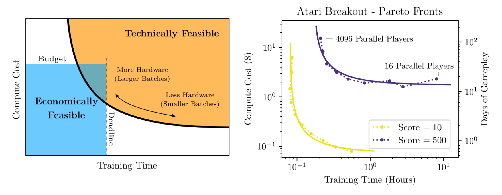
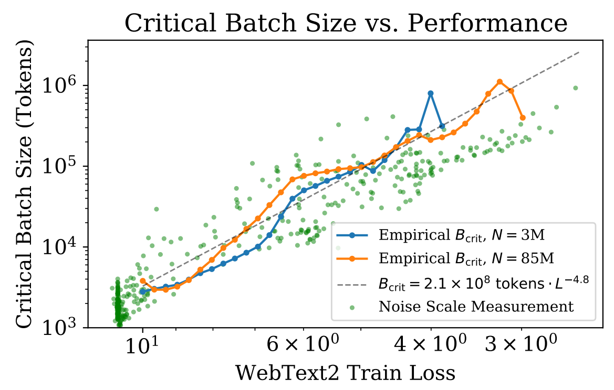

In this post, I’ll discuss the concept of the critical batch size, which is vital for both understanding stochastic optimization and improving distributed training efficiency. The primary focus of this blog will be on the research presented in An Empirical Model of Large-Batch Training with a more deep dive into their dervaitons. I’ve chosen this work primarily because of its digestible mathematical derivations and empirical results that align closely with contemporary large-scale experiments.
Introduction
Why do we use stochastic optimization?
In an introductory machine learning class, students are introduced to the concept of gradient descent. However, shortly after our first assignment on training neural networks, we’re guided away from gradient descent in favor of its stochastic counterpart. Reflecting on this, I realized it was a transition made without concrete justification other than the vague explanataion that “it converges faster and better.”
Today, we regard stochastic gradient descent (along with its adaptive variants like Adam(W), Adafactor, K-FAC, etc.) as the standard optimization method for training deep networks. Yet, we seldom question the rationale behind these choices. Often, we simply adopt batch sizes and learning rates from academic papers and code repositories without much contemplation. Even as a PhD student in ML, I too have spend a fair share using stochastic optimization without considering its implications. For simplicity’s sake, I’ll interchangeably use stochastic gradient descent (SGD) with mini-batch gradient descent, since mini-batch of size one is SGD.
For the purpose of this blog, I went around asking a simple question to my colleagues: “Why do we use mini-batch training?” I gathered varying responses with most common ones being:
- Small batches are a result of being memory constraints.
- The noise in mini-batches aids regularization.
- Mini-batches see more, so they can learn more.
- “I’m not sure; someone advised me to use it.”
While these response are not wrong, per se, I was able to sense a tone of uncertainty, even among the brightest peers. While a deep grasp isn’t necessary for most academic research, I believe that an appropriate understanding of this topic is important when scaling up or trying to reason through our experimental results.
So … what does it do exactly then?
From your personal experiences with training deep neural networks, you might’ve noticed that varying the batch size impacts the final performance and convergence speeds. Increasing the batch size often accelerates training but not always! Too small of a batch-size and the model no longer trains. We will explore certains aspects of these observation through lens of critical batch-size. For a concise takeaway if you want to skip over the math, the key points are:
- Learning rate is contingent on batch size. Whenever you adjust the batch size, retune your learning rate.
- Increasing the batch size yields diminishing returns. To optimize your model’s throughput, select a batch size for computational efficiency rather than to merely utilize all GPU memory.
What is critical batch-size and why care?
Deep learning thrives on scale. Given the immense empirical capabilities of large models, distributed training has become an indispensable component of deep learning research. Distributed learning aims to spread computational workload to “maximize” the throughput of training examples. This system-level optimization is facilitated through data-parallelism, model-parallelism, and pipeline parallelism.
- Data-parallelism: Multiple GPUs or nodes train on different subsets of data using the same model. Each device computes its gradients, which are then averaged and applied to update the model.
- Model-parallelism: A model is segmented across multiple GPUs or nodes, with each GPU hosting a layer or a group of layers. This approach is particularly beneficial for vast models that can't reside on a single GPU.
- Pipeline-parallelism: The forward and backward passes of a neural network are partitioned into stages, similar to model-parallelism. Data is partitioned into a queue, and pipielined through each stage (GPU device). The GPU processes the input and passes it along to the next GPU, and processes the next data partition. This setup ensures multiple batches are processed at varying stages concurrently, optimizing GPU utilization.
These parallelism types can be combined, but in academia, data-parallelism remains predominant. However, open-source libraries like PyTorch FSDP, DeepSpeed, HuggingFace, and Megatron are making the amalgamation of all three more feasible. Integrating these techniques allows one to train LLMs, which would have spanned 30 years, in just a month.
The topic of critical batch size revolves around data-parallelism, asking the question: “what is the compute/time-optimal batch-size?" To answer this question, lets think about our standard workflow.
When training models, two primary hyperparameters are the learning rate and the batch size. The tuning protocol is sequential:
- We first pick some arbitrary batch-size and then
- Sweep across the learning-rate that gives us the best empirical result.
It’s crucial to note that the optimal learning rate fluctuates based on the batch size. And while the choice of batch size is often driven by the urge to fully utilize GPU memory, is this heuristic correct in the first place?
When playing around with the batch-size we observe the following: smaller batches converge slowly, larger ones are faster, and an excessively large batch sizes slows it again. In academia, we often don’t see the third regime unless we have A100/H100 at our disposal.
Here the convergence speed can be seen as a tandem interplay between how well your GPU can parallelize the computation, and the number of gradient steps required to train the model. With more GPUs one can leverage bigger batches which minimizes training time for compute cost. In contrast, using a single GPU we can use small mini-batches but take “years” to train the model. The work of McCandlish et al. investigates what would be the perfect trade-off between compute budget and training speed.

Figure 1. of McCandlish et al. Blue box is where we want to be.
I will be using the derivation proposed in the aforementioned paper to motivate the problem with some slight massaging to make it easier to explain. The goal of critical batch-size is to understand what the optimal batch-size one should use given a compute/time budget. Doing so allows one to maximally and optimally allocate their computation budget.
Gradient descent and optimal learning rate
First, let's dive into how how to compute the optimal learning rate for full-batch gradient descent.
Proof sketch: Take a small perturbation as a function of the learning rate \( \eta \) and solve for what the optimal \( \eta \) should have been.
Let us denote \(G(\theta)\) be the gradient computed from the full batch, where we will drop \( \theta \) and use \(G\) for clarity. We first take an infinitesimal step along the negative gradient; this guarantees that our training loss is lower in the next iteration. This is only true in a full-batch setting, and for stochastic gradient descent, this is true on expectation.
How big should this infinitesimal perturbation be? If we take too small of a step, we would be moving along the same direction in the next iteration and would have wasted a forward-backward compute cycle. Too big, and our training loss would increase.
In optimization theory, the optimal learning rate can be analytically solved, albeit being very computationally expensive. One can also speed it up using line-search methods such as backtracking line search or Wolfe condition that use various heuristics for efficient estimation.
In deep learning, we take a more trial-and-error approach, where we try random learning rates until we stumble upon the hyperparameter that works the best. This is considered to be more cost-efficient than computing the exact step-size.
For now, let's analytically solve for the learning rate \( \eta_{\mathsf{max}} \). To do so, we will use the second-order Taylor expansion. Assume we take a tiny perturbation \( \Delta \theta \) around the model parameter \( \theta \).
Where \(H\) is the Hessian of the model. If we set the perturbation to be the negative gradient times some learning rate, \( \Delta \theta = - \eta G \), we arrive at:
Taking the derivative with respect to the learning rate \(\eta\) and setting it to zero, we find that the optimal step size \(\eta_{\mathsf{max}}\) should be:
The optimal learning rate directly depends on the Hessian around the parameter \( \theta \). Computing this is not only costly, but it also needs to be recomputed at every iteration.
The denominator depends on the curvature. Hence, based on the Hessian of the current parameter, the optimal learning rate could vary drastically. Common adaptive optimizers used today can be thought of as trying to approximate some information about the curvature \( H \) in a cost-efficient manner.
Great! We now know how to compute the optimal learning rate for full-batch gradient descent, but this doesn't tell us what the optimal learning rate should be for stochastic gradient descent methods. We now extend our analysis to SGD.
Extension to stochastic gradient descent
We would like to know how the optimal learning rate of full-batch gradient descent relates to that of mini-batch gradient descent. The only variable that differentiates the two is the mini-batch size \(B\). Hence, we would like to determine the relationship \(f(B)\), if any, that relates these two terms:
Our goal is to apply a similar analysis technique using the second-order Taylor expansion, but in the stochastic setting.
To compute the expectations of the second and the third term, we need to know the expectation and the variance of the mini-batch gradients \( G_{\mathsf{sgd}} \).
Since we sample the data points uniformly at random from the training distribution \( \mathcal{X} \), the gradient \( G_{\mathsf{sgd}}\) becomes a random variable. Since the mini-batch sampled i.i.d. from the data distribution is unbiased, the expectation of the R.V is the true gradient:
The covariance of the mini-batch informs us about the accuracy of the estimate relative to the true gradient. Under the assumption \(B \ll D\); the relationship is described as follows:
Where the per-sample covariance matrix \( \Sigma \) is:
We observe that the variance of the mini-batch scales inversely with the per-sample variance.
Now lets resume with the calculations above:
Where the second term is:
The third term is more involved:
Putting it all together we arrive at the equation in the paper:
Taking the derivative to solve for the largest \( \eta \) we have:
Which results in an optimal improvement of (plug in \( \eta_{\mathsf{opt}} \) back into the equation):
When the batch-noise is zero, we obtain the maximum learning rate of full-batch descent. In the small mini-batch regime, where \(\mathcal{B}_{\mathsf{noise}} \gg B\), increasing the batch size linearly improves the progress in training loss. However, as the batch size approaches the large batch regime and \(\mathcal{B}_{\mathsf{noise}} \ll B\), the second term in the denominator approaches 0, leading to diminishing returns. See figure below that illustrates this point:

Figure 3. of McCandlish et al. Blue box is where we want to be.
We define the critical batch size as the point where we cease to observe linear improvement from increasing the batch size. This is the point at which training speed reduces to 50% when \(\mathcal{B}_{\mathsf{noise}} \approx B\). We will provide a more concrete definition in the next section.
In summary, the batch-noise \(\mathcal{B}_{\mathsf{noise}} \) is influenced by the optimization landscape characterized by the gradient \( G \) and the \( H \). The optimization landscape is contingent on both the task and the architecture. Consequently, the optimal batch size will vary if any of these parameters are altered. Assessing the batch-noise provides insights into the complexity of the task, informativeness of the data point with respect to the task, and efficiency of your model to leverage more data.
Estimating compute optimal batch-size
We defined the critical batch size as the point where \( B \approx \mathcal{B}_{\mathsf{noise}} \). Given this batch-noise, we now aim to determine how to select the optimal batch size.
First, let's introduce a few new terms:
- \(S\)- the actual number of steps.
- \(E\)- the actual number of training samples.
- \(S_{\mathsf{min}}\)- the minimum number of steps required to achieve a specific performance level.
- \(E_{\mathsf{min}}\)- the minimum number of samples needed to attain a particular performance level.
Our objective is to determine whether to increase or decrease the batch size for maximum efficiency, which is determined by your hardware configuration and time constraints for computation. To do so for a given training paradigm, one would need to understand the exchange rate, \( r \), which equates the relationship between number of training samples with training steps as a function of batch-size:
Previously, we demonstrated that the change in loss for the full-batch gradient, \( \Delta \mathcal{L}_{\mathsf{max}} \), scales directly with \( {1 + \mathcal{B}_{\mathsf{noise}}/B} \) in relation to the optimal mini-batch loss \( \Delta \mathcal{L}_{\mathsf{opt}} \) for a given batch size \( B \). This suggests that by employing a mini-batch of size \( B \), our progression will deviate from the "ideal" gradient descent trajectory by a small delta, which scales with \( {1 + \mathcal{B}_{\mathsf{noise}}/B} \).
Under the simplifying assumption that the change in loss is directly proportional to the number of steps required for convergence, the number of steps needed for training would scale with \( 1 + \mathcal{B}_{\mathsf{noise}}/B \). Furthermore, given that the number of samples is related by \( E = BS \), we can write out its respective deltas as:
Plugging it back into the exchange rate \( r \) we have:
Further rearranging the terms reveals the following relationship:
This implies that one should select the batch size in proportion to the square root of the noise scale. It's essential to note that \( r \) is a design choice, allowing us to determine whether we want to prioritize sample complexity or compute complexity.
Next, we will leverage this relationship to equate the number of training steps \( S \) with the number of examples \( E \).
The total number of steps and the examples processed can be represented as the integral of the quantities \( \delta S \) and \( \delta E \) defined previously:
Where \( s \) denotes the training iteration.
By substituting the batch-to-noise-scale relationship \( B(s) = \sqrt{r \mathcal{B}_\mathsf{noise}(s)} \) into the \( S \) and \( E \) integrals, we get:
As \( r \) is a free variable, we rearrnage and solve for \( r \) for both equations:
Where \( \phi = \int \sqrt{\mathcal{B}_\mathsf{noise}(s)} ds \). Equating both sides by \( r \), we arrive at the sought-after relationship:
And with more massaging:
Here \( \gamma \) characterizes the variation in the noise-scale throughout training. If there's significant variation in \( \gamma \), one can expect to see large convergence speed benefits by adjusting the batch size over training.
If we choose not to eliminate \( r \) from both sides but instead set \( r = \frac{E_{\mathsf{min}}}{S_{\mathsf{min}}} \), we arrive at the following relationship:
Given this choice of \( r \), both cost efficiency and time efficiency are optimally balanced within the same factor. This is the empirical critical batch-size:
The second inequality is from our definition of critical batch-size, where we defined it to be the point in which the number of training steps and number of training samples is balanced.
How to compute batch-noise scale efficiently?
The critical batch size can be computed as an empirical fit to the data and is proportional to the batch noise. However, calculating it is very resource-intensive. One would need to sweep through all potential hyperparameters for a given batch size to determine the minimum number of samples required and then perform another sweep to determine the minimum number of steps. Is there an efficient alternative that is a good proxy for measuring batch-noise? Lets consider the optimal analytical step-size we derived above:
Computing the Hessian \( H \) is the resource-intensive component that makes it infeasible to calculate the batch-noise analytically. The authors suggest making a simplifying assumptions that the Hessian is a constant factor of an identity matrix. This assumption implies a benign optimization landscape that is convex, constant curvature, and independent across parameters, which is almost never true in practice. But using this simplification we arrive at:
Where the numerator represents the sum of the variances of the individual gradient components, and the denominator is the global norm of the gradient.
This simplified measure allows us to feasibly calculate the batch-noise throughout training. If the dataset is small, one can compute the exact \( G \). Alternatively, if the dataset is too big, one can estimate \( G_{\mathsf{sgd}} \) and \( G \) using a small mini-batch and a larger mini-batch.
In distributed training framework, one can estimate this quantity with almost zero overhad. The gradients from a single device can be used as \( G_{\mathsf{sgd}} \), and the accumulated gradient as \( G \). This approximation requires averaging of multiple batches to obtain an unbiased estimate.
Results
We now go over some of the results.
Is the simplification a good approximation?
Firstly, we examine the adequacy of the simplification, \( \mathcal{B}_{\mathsf{simple}} \), as an indicator for the critical batch-size. Authors' analysis reveals that while it does trace the trend accurately, it tends to overestimate by a factor of 10. Nonetheless, this general trajectory remains consistent across various tasks, as highlighted in the paper. Furthermore, when aiming for a particular validation loss, the trade-off between batch size and training steps appears to be consistent, as evidenced by the Pareto frontier curves. This suggests that if we target a specific loss value, the relationship between batch size and training steps remains consistent.

Figure 7. of McCandlish et al.
How does the noise scale vary with tasks?
The gradient noise scale seems to fluctuate based on the task. Drawing from intuitive understanding regarding task complexity, it's reasonable to infer that as task complexity rises, the gradient noise scale would follow suit. This aligns with the notion that for more intricate tasks, the critical batch size would be larger — necessitating more data samples to facilitate an accurate update.

Figure 4. of McCandlish et al.
Does the noise scale vary with model architecture?
Lastly, observations indicate that the gradient noise scale remains relatively consistent across different parameter sizes within the same model family, as illustrated by the LSTM in the subsequent figure. Moreover, the gradient noise scale's progression throughout training appears to exhibit a consistent trend, across various model sizes.

Figure 8. of McCandlish et al.
There are a lot of results I skipped over, and I do suggest going through the paper on your own time.
Additional results from Shallue et al.
Measuring the Effects of Data Parallelism on Neural Network Training parallel is a concurrent work that ran extensive empirical experiments on critical batch-size. Here I list some of the key findings of the work that I found interesting (I put section/page reference if you want to jump directly to it):
- Some models can exploit much larger batch sizes than others (Section 4.3):
- Transformer > LSTMs
- CNNs > MLPs
- ResNets > VGG
- Momentum extends perfect scaling to larger batch sizes (Section 4.4)
- The dataset matters (Section 4.5)
- Regularization can be more helpful at some batch sizes than others (Section 4.6)
- The best learning rate and momentum vary with batch size (Section 4.7)
- A mathematical investigation for why adaptive methods like K-FAC have even larger critical batch-size is investigated in Which Algorithmic Choices Matter at Which Batch Sizes? Insights From a Noisy Quadratic Mode
- With increasing batch size, the region in metaparameter space corresponding to rapid training in terms of epochs becomes smaller, while the region in metaparameter space corresponding to rapid training in terms of step-count grows larger (Page 24, Figure 9)
- Smaller Transformer models have larger stable learning rates (Page 25, Figure 10)
- Solution quality depends on compute budget more than batch size (Page 26, Figure 11)
Scaling law
The follow up work on Kaplan and McCandlish et al. in Scaling Laws for Neural Language Models. In their work, they established a power-law relationship using smaller transformer models to make predictions about the behavior of larger GPT models. Their power-law equation is:
Where:
\( B^* \) is the initial batch-size, valued at \( 2 \times 10^8 \).
\( \alpha \) is the power-law exponent, which I recalculated to be approximately \( 4.7619 \) to align the equation with the conventional power-law format.

Figure 10. of Kaplan et al. Critical batch-size of transformer models of varying sizes are consistent.
Given a specific loss \( L \), one can use this equation to determine the optimal batch size. As training continues and the model loss reduces, the critical batch size adjusts according to this power-law relationship. By using the critical batch size, one can utilize larger batch sizes to be more efficient as the training progresses, enabling more data parallelism.
From the \( B_{\mathsf{crit}}(L) \) relationship, we can also determine the optimal number of steps for convergence:
Optimal performance is achieved when \( B \gg B_{\mathsf{crit}} \). Extending this analysis, one can ascertain the compute-optimal batch size (where "compute-optimal" refers to minimizing total computational operations or flops). Given a model size \( N \), the total number of flops is roughly \( C = 6NBS \) for batch size \( B \). Thus, the compute cost required is:
Conversely, the minimum computation happens when \( B \ll B_{\mathsf{crit}} \). The ideal scenario is neither purely step-optimal \( S_{\mathsf{min}} \) nor compute-optimal \( C_{\mathsf{min}} \), but rather a balanced trade-off between the two. This is achieved when \( B = B_{\mathsf{crit}} \), striking the right balance between computational efficiency and training time, as discussed throughout this post.
The concept of critical batch-size naturally fits into the study of scaling law. Scaling laws is a topic I enjoy deeply. However, delving too deep might be overwhelming for this blog post. If you’re keen to learn more, here are some recommended readings:
- Deep Learning Scaling is Predictable, Empirically
- Scaling Laws for Neural Language Models
- Scaling laws for autoregressive generative modeling
- Training Compute-Optimal Large Language Models
- Train big, then compress: Rethinking model size for efficient training and inference of transformers
- Critical Parameters for Scalable Distributed Learning with Large Batches and Asynchronous Updates
If time permits, I will write a follow-up post on scaling laws in the future.
Some fascinating observations from some of these works: Given the same compute budget, its better to train a larger model and stop training early than to train the small model to convergence. Large models are easier to fine-tune, and better for quantization.
Additional Relevant Works
The subject of critical batch-size has garnered significant attention in the research community. For those interested in further exploration, here are some noteworthy studies:
- Stochastic Training is Not Necessary for Generalization
- The Power of Interpolation: Understanding the Effectiveness of SGD in Modern Over-parametrized Learning
- Gradient Diversity: a Key Ingredient for Scalable Distributed Learning
- Parallelizing Stochastic Gradient Descent for Least Squares Regression: Mini-batching, Averaging, and Model Misspecification
These studies provide mathematical insights for anyone looking to gain a deeper understanding of the topic.
Conclusion
Unraveling the nuances of the critical batch-size sheds light on the intricate relationship between deep learning optimization and scalable training. It’s not just a guideline for efficient distributed training, but also a core facet in the science of deep learning. It prompts us to rethink our data curation strategies, model design choices, optimization designs, and even curriculum learning? In my opinion, these works offer insights beyond what it was originally marketed for.